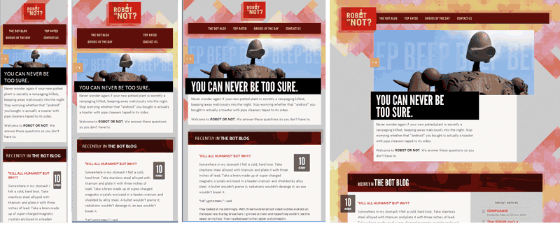
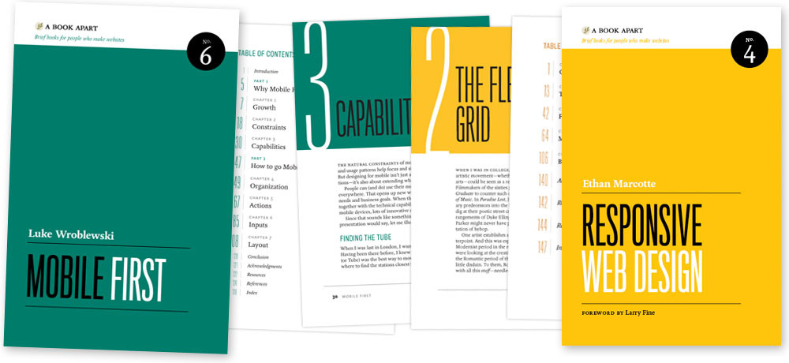
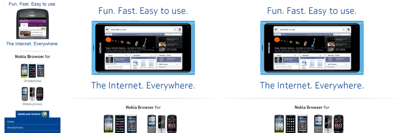
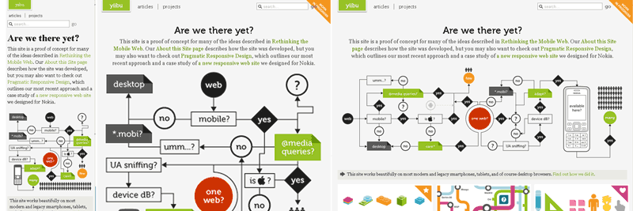

Your browser doesn't support the features
required by impress.js, so you are presented with a simplified
version of this presentation.
For the best experience please use the latest
Chrome, Safari or Firefox browser. Upcoming
version 10 of Internet Explorer should also handle it.
Short introduction to
Mobile First Responsive Web Design
Bernard Lange
@gustaff_weldon
Device landscape

- variety of screens
- context of use
Mobile First
- start with mobile version as a default
- focus on smaller screens and the most important features
Responsive Web Design

- elastic layout with fluid grids
- responsive images
- media queries
Responsive Layouts
- percentage based
- screen width breakpoints with media queries
- flexible within resolution ranges
- linearised default
Problems
Responsive Images
images adapting to container width
img { max-width: 100%; }
small images as default, replaced with JS
<img src="mobile-image.jpg"
data-full-src="desktop-image.jpg">
Problems:
- client side JS dependency
- server side detection
- big images sent to small screen devices - wasted
bandwith and CPU
Solutions discussed
<picture alt="angry pirate">
<source src=hires.png media="min-width:800px">
<source src=midres.png media="network-speed:3g">
<source src=lores.png>
<!-- fallback for browsers without support -->
<img src=midres.png alt="angry pirate">
</picture>

- new and capable devices
- less capable devices, prepare for mobile


Tools
Takeaways
- think in flexible units % and em's
- default to lightweight mobile version and small images
- start small and enhance for wider screens
- keep layout fluid within the ranges
Questions?
Thank you
Bernard Lange
@gustaff_weldon